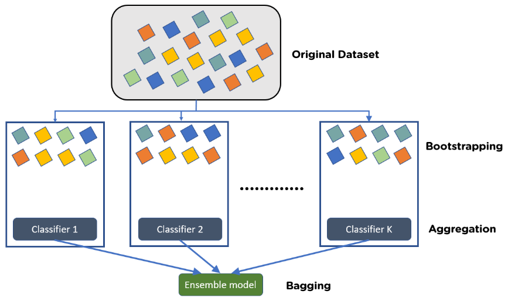
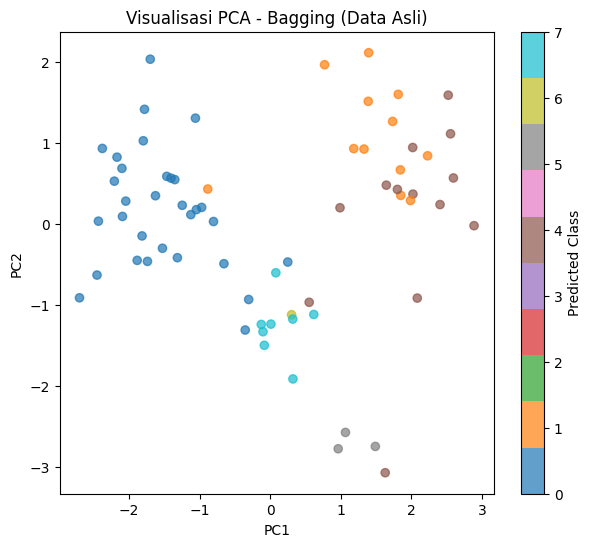
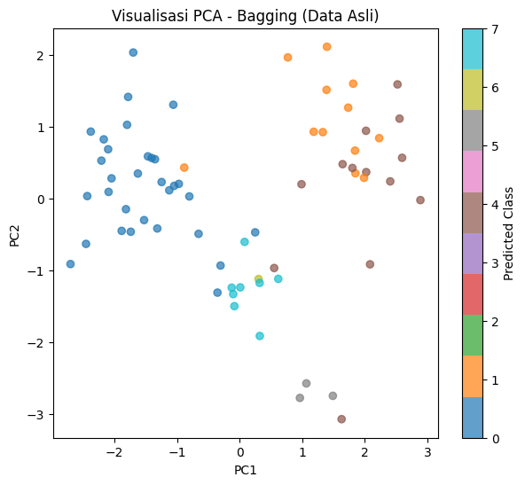

PENYEIMBANGAN DATA MENGGUNAKAN SMOTE DAN ADASYN#
Pentingnya Penyeimbangan Data#
Penyeimbangan data adalah langkah penting dalam proses pengolahan data, terutama ketika kita berhadapan dengan dataset yang memiliki distribusi kelas tidak seimbang. Dalam banyak kasus nyata, jumlah sampel dari satu kelas bisa jauh lebih besar dibandingkan kelas lainnya. Kondisi ini menimbulkan masalah serius karena model cenderung bias terhadap kelas mayoritas. Akibatnya, meskipun akurasi terlihat tinggi, performa sebenarnya dalam mengenali kelas minoritas menjadi sangat buruk.
Dengan melakukan penyeimbangan, misalnya melalui metode SMOTE atau ADASYN, kita memberikan kesempatan bagi model untuk mempelajari pola dari kelas minoritas. Hal ini penting agar model tidak hanya “bermain aman” dengan selalu memprediksi kelas mayoritas, tetapi juga mampu mengenali kelas minoritas dengan baik. Dampaknya, evaluasi model tidak hanya terbatas pada akurasi, tetapi juga meningkat pada metrik lain yang lebih adil, seperti recall, precision, F1-score, atau AUC.
Penyeimbangan data juga sangat relevan pada aplikasi-aplikasi kritis, seperti deteksi penyakit langka, transaksi fraud, atau sistem keamanan. Dalam kasus ini, meskipun jumlah data minoritas sedikit, keberhasilan dalam mendeteksinya justru jauh lebih penting dibandingkan sekadar memiliki akurasi tinggi. Dengan demikian, penyeimbangan data membantu model untuk lebih adil, tidak mengabaikan kelas yang sebenarnya paling krusial.
Metode SMOTE#
Synthetic Minority Over-sampling Technique (SMOTE) adalah salah satu metode yang digunakan untuk menangani masalah ketidakseimbangan kelas dalam data. Pada kondisi di mana jumlah sampel kelas minoritas jauh lebih sedikit dibandingkan kelas mayoritas, model machine learning biasanya kesulitan mempelajari pola dari kelas minoritas tersebut. SMOTE ini bisa digunakan untuk mengatasi masalah ini dengan cara membuat data sintetis baru, bukan sekadar menduplikasi data yang sudah ada.
Prinsip kerja SMOTE adalah mencari sampel terdekat dari kelas minoritas, kemudian menghasilkan titik data baru di antara sampel tersebut dengan menggunakan interpolasi. Dengan demikian, data sintetis yang dihasilkan lebih bervariasi dan representatif dibandingkan jika hanya melakukan penyalinan data minoritas secara acak. Pendekatan ini membantu memperluas ruang fitur kelas minoritas, sehingga model dapat mengenali pola dengan lebih baik.
Kelebihan SMOTE adalah kemampuannya meningkatkan performa model dalam mendeteksi kelas minoritas, terutama pada metrik seperti recall dan F1-score. Namun, metode ini juga memiliki keterbatasan. Jika tidak digunakan dengan hati-hati, data sintetis yang dihasilkan bisa terlalu mirip dengan data asli sehingga menimbulkan overfitting, atau bahkan menciptakan noise bila interpolasi dilakukan pada data yang sebenarnya outlier.
Metode ADASYN#
Adaptive Synthetic Sampling (ADASYN) adalah teknik pembelajaran mesin yang digunakan untuk mengatasi ketidakseimbangan dataset dengan menghasilkan sampel sintetis untuk kelas-kelas yang kurang terwakili. Metode oversampling ini meningkatkan kinerja klasifikasi dengan menyeimbangkan dataset dan mengurangi bias terhadap kelas mayoritas, yang umum terjadi dalam aplikasi dunia nyata seperti penelitian medis, deteksi intrusi jaringan, dan deteksi penipuan.
ADASYN bekerja dengan menghasilkan sampel sintetis untuk kelas minoritas berdasarkan ruang fitur dari set data asli. ADASYN menghitung distribusi kepadatan setiap sampel kelas minoritas dan menghasilkan sampel sintetis berdasarkan distribusi kepadatan tersebut. Pendekatan adaptif ini memastikan lebih banyak sampel sintetis dihasilkan untuk sampel kelas minoritas yang lebih sulit dipelajari, sehingga meningkatkan kinerja klasifikasi model pembelajaran mesin.
Keunggulan penggunaan ADASYN dalam aplikasi pembelajaran mesin meliputi:
Peningkatan kinerja klasifikasi untuk kelas-kelas yang kurang terwakili dengan menghasilkan sampel sintetis dan menyeimbangkan dataset.
Pengurangan bias terhadap kelas mayoritas, yang umum terjadi pada dataset yang tidak seimbang.
Peningkatan kemampuan generalisasi model pembelajaran mesin, karena ADASYN berfokus pada pembuatan sampel untuk instans kelas minoritas yang sulit dipelajari.
Dapat diterapkan pada berbagai aplikasi dunia nyata, seperti deteksi intrusi, penelitian medis, dan deteksi penipuan.
Meskipun ADASYN merupakan teknik yang berharga untuk mengatasi dataset yang tidak seimbang, teknik ini memiliki beberapa keterbatasan:
Peningkatan kompleksitas komputasi akibat pembuatan sampel sintetis, yang dapat memengaruhi waktu pelatihan model pembelajaran mesin.
Potensi overfitting, karena sampel sintetis yang dihasilkan mungkin tidak secara akurat merepresentasikan distribusi dasar kelas minoritas yang sebenarnya.
Sensitivitas terhadap derau dan outlier dalam dataset, yang dapat memengaruhi kualitas sampel sintetis yang dihasilkan.
Perbedaan Utama SMOTE dan ADASYN#
ADASYN dan SMOTE (Synthetic Minority Over-sampling Technique) keduanya merupakan teknik oversampling yang digunakan untuk mengatasi ketidakseimbangan dataset. Perbedaan utama di antara keduanya adalah ADASYN menghasilkan sampel sintetis secara adaptif berdasarkan distribusi kepadatan sampel kelas minoritas, sementara SMOTE menghasilkan sampel sintetis dengan melakukan interpolasi antar sampel kelas minoritas. Pendekatan adaptif dalam ADASYN ini membantu untuk lebih berfokus pada sampel yang sulit dipelajari, yang berpotensi menghasilkan kinerja klasifikasi yang lebih baik.
Langkah-Langkah Penyeimbangan Data#
Dibawah ini beberapa kode yang berfungsi untuk menampilkan data ecoli, menyeimbangkan menggunakan metode SMOTE dan ADASYN. Langkah-langkahnya adalah sebagai berikut:
Menginstall Library#
Disini saya menggunakan beberapa pustaka Python untuk membantu mengolah data. Pandas digunakan untuk membaca dan mengatur data dalam bentuk tabel, sedangkan NumPy membantu dalam perhitungan angka dan operasi matematika. Untuk membuat grafik atau visualisasi, digunakan Matplotlib agar data lebih mudah dipahami.
Pada tahap pengolahan data, StandardScaler digunakan untuk menstandarkan data supaya setiap fitur berada pada skala yang seimbang, sedangkan MinMaxScaler digunakan untuk mengubah data ke dalam rentang tertentu, biasanya antara 0 sampai 1. Agar label kelas bisa diproses oleh komputer, LabelEncoder digunakan untuk mengubah data kategori menjadi angka.
Selanjutnya, metode PCA (Principal Component Analysis) digunakan untuk mereduksi dimensi data sehingga data yang awalnya memiliki banyak fitur bisa dilihat dalam bentuk grafik 2 dimensi.
Masalah ketidakseimbangan data juga diatasi dengan menggunakan SMOTE dan ADASYN. Kedua metode ini bekerja dengan membuat data tambahan pada kelas yang jumlahnya sedikit, sehingga distribusi data antar kelas menjadi lebih seimbang.
pip install imbalanced-learn
Requirement already satisfied: imbalanced-learn in c:\users\triad\appdata\local\programs\python\python39\lib\site-packages (0.12.4)
Requirement already satisfied: scikit-learn>=1.0.2 in c:\users\triad\appdata\local\programs\python\python39\lib\site-packages (from imbalanced-learn) (1.6.1)
Requirement already satisfied: numpy>=1.17.3 in c:\users\triad\appdata\local\programs\python\python39\lib\site-packages (from imbalanced-learn) (2.0.2)
Requirement already satisfied: threadpoolctl>=2.0.0 in c:\users\triad\appdata\local\programs\python\python39\lib\site-packages (from imbalanced-learn) (3.6.0)
Requirement already satisfied: joblib>=1.1.1 in c:\users\triad\appdata\local\programs\python\python39\lib\site-packages (from imbalanced-learn) (1.5.2)
Requirement already satisfied: scipy>=1.5.0 in c:\users\triad\appdata\local\programs\python\python39\lib\site-packages (from imbalanced-learn) (1.13.1)
Note: you may need to restart the kernel to use updated packages.
WARNING: You are using pip version 22.0.4; however, version 25.2 is available.
You should consider upgrading via the 'C:\Users\triad\AppData\Local\Programs\Python\Python39\python.exe -m pip install --upgrade pip' command.
pip install pandas scikit-learn imbalanced-learn matplotlib
Requirement already satisfied: pandas in c:\users\triad\appdata\local\programs\python\python39\lib\site-packages (2.3.2)
Requirement already satisfied: scikit-learn in c:\users\triad\appdata\local\programs\python\python39\lib\site-packages (1.6.1)
Requirement already satisfied: imbalanced-learn in c:\users\triad\appdata\local\programs\python\python39\lib\site-packages (0.12.4)
Requirement already satisfied: matplotlib in c:\users\triad\appdata\local\programs\python\python39\lib\site-packages (3.9.4)
Requirement already satisfied: pytz>=2020.1 in c:\users\triad\appdata\local\programs\python\python39\lib\site-packages (from pandas) (2025.2)
Requirement already satisfied: numpy>=1.22.4 in c:\users\triad\appdata\local\programs\python\python39\lib\site-packages (from pandas) (2.0.2)
Requirement already satisfied: python-dateutil>=2.8.2 in c:\users\triad\appdata\local\programs\python\python39\lib\site-packages (from pandas) (2.9.0.post0)
Requirement already satisfied: tzdata>=2022.7 in c:\users\triad\appdata\local\programs\python\python39\lib\site-packages (from pandas) (2025.2)
Requirement already satisfied: scipy>=1.6.0 in c:\users\triad\appdata\local\programs\python\python39\lib\site-packages (from scikit-learn) (1.13.1)
Requirement already satisfied: joblib>=1.2.0 in c:\users\triad\appdata\local\programs\python\python39\lib\site-packages (from scikit-learn) (1.5.2)
Requirement already satisfied: threadpoolctl>=3.1.0 in c:\users\triad\appdata\local\programs\python\python39\lib\site-packages (from scikit-learn) (3.6.0)
Requirement already satisfied: pillow>=8 in c:\users\triad\appdata\local\programs\python\python39\lib\site-packages (from matplotlib) (11.3.0)
Requirement already satisfied: packaging>=20.0 in c:\users\triad\appdata\local\programs\python\python39\lib\site-packages (from matplotlib) (25.0)
Requirement already satisfied: contourpy>=1.0.1 in c:\users\triad\appdata\local\programs\python\python39\lib\site-packages (from matplotlib) (1.3.0)
Requirement already satisfied: pyparsing>=2.3.1 in c:\users\triad\appdata\local\programs\python\python39\lib\site-packages (from matplotlib) (3.2.5)
Requirement already satisfied: importlib-resources>=3.2.0 in c:\users\triad\appdata\local\programs\python\python39\lib\site-packages (from matplotlib) (6.5.2)
Requirement already satisfied: cycler>=0.10 in c:\users\triad\appdata\local\programs\python\python39\lib\site-packages (from matplotlib) (0.12.1)
Requirement already satisfied: fonttools>=4.22.0 in c:\users\triad\appdata\local\programs\python\python39\lib\site-packages (from matplotlib) (4.60.0)
Requirement already satisfied: kiwisolver>=1.3.1 in c:\users\triad\appdata\local\programs\python\python39\lib\site-packages (from matplotlib) (1.4.7)
Requirement already satisfied: zipp>=3.1.0 in c:\users\triad\appdata\local\programs\python\python39\lib\site-packages (from importlib-resources>=3.2.0->matplotlib) (3.23.0)
Requirement already satisfied: six>=1.5 in c:\users\triad\appdata\local\programs\python\python39\lib\site-packages (from python-dateutil>=2.8.2->pandas) (1.17.0)
Note: you may need to restart the kernel to use updated packages.
WARNING: You are using pip version 22.0.4; however, version 25.2 is available.
You should consider upgrading via the 'C:\Users\triad\AppData\Local\Programs\Python\Python39\python.exe -m pip install --upgrade pip' command.
#
import pandas as pd
import numpy as np
import matplotlib.pyplot as plt
from sklearn.preprocessing import StandardScaler, LabelEncoder
from sklearn.decomposition import PCA
from imblearn.over_sampling import ADASYN, SMOTE
from sklearn.preprocessing import MinMaxScaler
Membaca Data#
Pembacaan data ini perlu dilakukan agar sistem dapat mengetahui fitur0fitur apa saja yang harus diproses. Karena data ecoli sudah saya ekspor ke bentuk csv, maka membaca file nya menggunakan pd.read_csv
df = pd.read_csv("ecoli.csv")
df
| `id` | `protein_name` | `mcg` | `gvh` | `lip` | `chg` | `aac` | `alm1` | `alm2` | `localization_class` | |
|---|---|---|---|---|---|---|---|---|---|---|
| 0 | 1 | AAT_ECOLI | 0.49 | 0.29 | 0.48 | 0.5 | 0.56 | 0.24 | 0.35 | cp |
| 1 | 2 | ACEA_ECOLI | 0.07 | 0.40 | 0.48 | 0.5 | 0.54 | 0.35 | 0.44 | cp |
| 2 | 3 | ACEK_ECOLI | 0.56 | 0.40 | 0.48 | 0.5 | 0.49 | 0.37 | 0.46 | cp |
| 3 | 4 | ACKA_ECOLI | 0.59 | 0.49 | 0.48 | 0.5 | 0.52 | 0.45 | 0.36 | cp |
| 4 | 5 | ADI_ECOLI | 0.23 | 0.32 | 0.48 | 0.5 | 0.55 | 0.25 | 0.35 | cp |
| ... | ... | ... | ... | ... | ... | ... | ... | ... | ... | ... |
| 331 | 332 | TREA_ECOLI | 0.74 | 0.56 | 0.48 | 0.5 | 0.47 | 0.68 | 0.30 | pp |
| 332 | 333 | UGPB_ECOLI | 0.71 | 0.57 | 0.48 | 0.5 | 0.48 | 0.35 | 0.32 | pp |
| 333 | 334 | USHA_ECOLI | 0.61 | 0.60 | 0.48 | 0.5 | 0.44 | 0.39 | 0.38 | pp |
| 334 | 335 | XYLF_ECOLI | 0.59 | 0.61 | 0.48 | 0.5 | 0.42 | 0.42 | 0.37 | pp |
| 335 | 336 | YTFQ_ECOLI | 0.74 | 0.74 | 0.48 | 0.5 | 0.31 | 0.53 | 0.52 | pp |
336 rows × 10 columns
Distribusi Jumlah Sampel Per Kelas Sebelum Penyembangan#
Sebelum dilakukan proses penyeimbangan data, saya membuat grafik batang untuk melihat jumlah sampel pada setiap kelas. Grafik ini membantu saya mengetahui apakah data yang digunakan seimbang atau tidak. Dari grafik tersebut biasanya terlihat bahwa ada kelas yang jumlah datanya jauh lebih banyak dibanding kelas lain. Kondisi seperti ini disebut ketidakseimbangan data (imbalanced data), dan jika dibiarkan, bisa membuat model hanya “menyukai” kelas yang jumlahnya besar saja, sementara kelas kecil diabaikan. Karena itu, grafik ini penting sebagai langkah awal untuk memahami kondisi data sebelum dilakukan penyeimbangan dengan metode seperti SMOTE atau ADASYN.
print(df.columns)
Index(['`id`', '`protein_name`', '`mcg`', '`gvh`', '`lip`', '`chg`', '`aac`',
'`alm1`', '`alm2`', '`localization_class`'],
dtype='object')
df.columns = df.columns.str.replace("`", "")
X = df.drop(columns=["id", "protein_name", "localization_class"])
y = df["localization_class"]
class_counts = y.value_counts()
plt.figure(figsize=(8,5))
plt.bar(class_counts.index, class_counts.values)
plt.title("Distribusi Jumlah Sampel per Kelas (Sebelum Penyeimbangan)")
plt.xlabel("Kelas")
plt.ylabel("Jumlah Sampel")
plt.xticks(rotation=45)
plt.show()
Perbandingan Data Sebelum dan Sesudah Standarisasi#
Pada langkah ini, dilakukan proses standarisasi terhadap data. Sebelum distandarisasi, setiap fitur (kolom) memiliki skala yang berbeda-beda. Misalnya, ada fitur dengan nilai kecil (seperti 0.1 atau 0.2) dan ada juga fitur dengan nilai besar. Hal ini bisa membuat algoritma machine learning sulit membandingkan antar fitur karena perbedaan skala tersebut.
Setelah dilakukan standarisasi menggunakan StandardScaler, semua fitur diubah menjadi skala yang seragam dengan nilai rata-rata mendekati nol dan standar deviasi satu. Dengan cara ini, setiap fitur memiliki pengaruh yang seimbang ketika digunakan dalam pemodelan.
Tabel pertama menunjukkan data asli sebelum standarisasi, sedangkan tabel kedua memperlihatkan data setelah standarisasi. Perubahan ini memastikan data lebih siap digunakan untuk analisis lebih lanjut, seperti PCA maupun oversampling.
df.columns = df.columns.str.replace("`", "")
X = df.drop(columns=["id", "protein_name", "localization_class"])
y = df["localization_class"]
scaler = StandardScaler()
X_scaled = scaler.fit_transform(X)
df_before = pd.DataFrame(X.head(), columns=X.columns)
df_after = pd.DataFrame(X_scaled[:5], columns=X.columns)
print(" Sebelum Standarisasi ")
display(df_before)
print("\n Sesudah Standarisasi ")
display(df_after)
Sebelum Standarisasi
| mcg | gvh | lip | chg | aac | alm1 | alm2 | |
|---|---|---|---|---|---|---|---|
| 0 | 0.49 | 0.29 | 0.48 | 0.5 | 0.56 | 0.24 | 0.35 |
| 1 | 0.07 | 0.40 | 0.48 | 0.5 | 0.54 | 0.35 | 0.44 |
| 2 | 0.56 | 0.40 | 0.48 | 0.5 | 0.49 | 0.37 | 0.46 |
| 3 | 0.59 | 0.49 | 0.48 | 0.5 | 0.52 | 0.45 | 0.36 |
| 4 | 0.23 | 0.32 | 0.48 | 0.5 | 0.55 | 0.25 | 0.35 |
Sesudah Standarisasi
| mcg | gvh | lip | chg | aac | alm1 | alm2 | |
|---|---|---|---|---|---|---|---|
| 0 | -0.051761 | -1.419531 | -0.175142 | -0.054636 | 0.490781 | -1.207717 | -0.716084 |
| 1 | -2.212876 | -0.675967 | -0.175142 | -0.054636 | 0.327106 | -0.697111 | -0.285665 |
| 2 | 0.308424 | -0.675967 | -0.175142 | -0.054636 | -0.082081 | -0.604273 | -0.190016 |
| 3 | 0.462790 | -0.067597 | -0.175142 | -0.054636 | 0.163431 | -0.232923 | -0.668259 |
| 4 | -1.389594 | -1.216741 | -0.175142 | -0.054636 | 0.408944 | -1.161299 | -0.716084 |
Normalisasi Data dengan Min-Max Scaler#
Pada bagian ini dilakukan normalisasi data menggunakan metode Min-Max Scaler. Normalisasi bertujuan untuk mengubah nilai setiap fitur ke dalam rentang 0 hingga 1, tanpa mengubah pola hubungan antar data. Dengan cara ini, semua fitur berada pada skala yang sama sehingga tidak ada fitur dengan nilai besar yang mendominasi analisis. Tabel hasil normalisasi memperlihatkan data yang sudah dikonversi, di mana setiap kolom kini memiliki nilai yang konsisten dalam rentang 0 sampai 1.
X = df.drop(columns=["id", "protein_name", "localization_class"])
scaler = MinMaxScaler()
X_norm = scaler.fit_transform(X)
df_norm = pd.DataFrame(X_norm, columns=X.columns)
display(df_norm.head())
| mcg | gvh | lip | chg | aac | alm1 | alm2 | |
|---|---|---|---|---|---|---|---|
| 0 | 0.550562 | 0.154762 | 0.0 | 0.0 | 0.636364 | 0.216495 | 0.353535 |
| 1 | 0.078652 | 0.285714 | 0.0 | 0.0 | 0.613636 | 0.329897 | 0.444444 |
| 2 | 0.629213 | 0.285714 | 0.0 | 0.0 | 0.556818 | 0.350515 | 0.464646 |
| 3 | 0.662921 | 0.392857 | 0.0 | 0.0 | 0.590909 | 0.432990 | 0.363636 |
| 4 | 0.258427 | 0.190476 | 0.0 | 0.0 | 0.625000 | 0.226804 | 0.353535 |
Implementasi PCA#
Pada tahap ini digunakan metode Principal Component Analysis (PCA) untuk menyederhanakan data. PCA mengambil informasi terpenting dari data yang memiliki banyak variabel, lalu mereduksinya menjadi dua komponen utama (PC1 dan PC2). Dengan cara ini, pola dalam data tetap terjaga meskipun dimensinya dikurangi. Hasilnya berupa data baru dengan dua sumbu utama, sehingga lebih mudah divisualisasikan dalam bentuk scatter plot dan membantu memahami perbedaan antar kelas secara lebih jelas.
pca = PCA(n_components=2, random_state=42)
X_pca = pca.fit_transform(X_scaled)
df_pca = pd.DataFrame(X_pca, columns=["PC1", "PC2"])
df_pca["class"] = y.values
display(df_pca.head())
| PC1 | PC2 | class | |
|---|---|---|---|
| 0 | -1.290352 | -0.324912 | cp |
| 1 | -1.586012 | -1.034683 | cp |
| 2 | -0.530483 | -0.130495 | cp |
| 3 | -0.261721 | 0.338264 | cp |
| 4 | -1.824364 | -0.731834 | cp |
plt.figure(figsize=(8,6))
classes = y.unique()
colors = plt.cm.get_cmap("tab10", len(classes))
for i, cls in enumerate(classes):
idx = (y == cls)
plt.scatter(X_pca[idx, 0], X_pca[idx, 1],
label=cls, color=colors(i), s=50, alpha=0.7)
plt.xlabel("PC1")
plt.ylabel("PC2")
plt.title("Visualisasi PCA (2 Komponen Utama)")
plt.legend()
plt.show()
C:\Users\triad\AppData\Local\Temp\ipykernel_15368\1445468488.py:3: MatplotlibDeprecationWarning: The get_cmap function was deprecated in Matplotlib 3.7 and will be removed in 3.11. Use ``matplotlib.colormaps[name]`` or ``matplotlib.colormaps.get_cmap()`` or ``pyplot.get_cmap()`` instead.
colors = plt.cm.get_cmap("tab10", len(classes))
Heatmap dibawah ini menampilkan korelasi antar fitur numerik sebelum dilakukan penyeimbangan dengan SMOTE. Setiap sel menunjukkan seberapa kuat hubungan antara dua fitur, dimana warna merah atau biru menunjukkan korelasi tinggi positif atau negatif, sedangkan warna netral menunjukkan korelasi rendah. Visualisasi ini penting untuk memahami struktur data asli dan melihat apakah ada fitur yang sangat terkait satu sama lain. Dengan mengetahui korelasi sebelum SMOTE, kita bisa memastikan bahwa penambahan sampel sintetis nantinya tidak akan merusak pola hubungan antar fitur.
numeric_df = df.drop("localization_class", axis=1).select_dtypes(include=[np.number])
corr = numeric_df.corr().values
fig, ax = plt.subplots(figsize=(10,8))
cax = ax.matshow(corr, cmap="coolwarm")
plt.colorbar(cax)
ax.set_xticks(range(len(numeric_df.columns)))
ax.set_yticks(range(len(numeric_df.columns)))
ax.set_xticklabels(numeric_df.columns, rotation=90)
ax.set_yticklabels(numeric_df.columns)
plt.title("Heatmap Korelasi antar Fitur", pad=20)
plt.show()
SMOTE#
Scatter plot ini menampilkan data setelah dikurangi dimensinya menjadi dua komponen utama menggunakan PCA. Setiap titik mewakili satu sampel, dan warnanya menunjukkan kelas masing-masing. Pada data asli, terlihat beberapa kelas memiliki sangat sedikit sampel sehingga titiknya jarang dan distribusinya tidak merata. Kondisi ini dapat membuat model sulit mengenali kelas minoritas. Setelah dilakukan SMOTE, jumlah sampel di kelas-kelas minoritas ditambah dengan membuat titik-titik sintetis. Akibatnya, distribusi antar kelas menjadi lebih seimbang, sehingga model bisa belajar dari semua kelas dengan lebih baik, tanpa kehilangan pola asli data. Scatter plot ini membantu memvisualisasikan perbedaan distribusi sebelum dan sesudah penyeimbangan, serta memastikan bahwa data siap untuk proses pemodelan.
le = LabelEncoder()
y_enc = le.fit_transform(y)
Kode ini digunakan untuk menampilkan bagaimana data terlihat setelah dilakukan penyeimbangan menggunakan SMOTE. SMOTE menambahkan sampel baru untuk kelas-kelas yang jumlahnya sedikit sehingga dataset menjadi lebih seimbang. Setelah itu, data direduksi dimensinya menjadi dua komponen utama menggunakan PCA agar bisa divisualisasikan. Pada plot, titik bulat mewakili data asli, sedangkan tanda silang mewakili data sintetis yang dihasilkan SMOTE. Visualisasi ini membantu melihat distribusi data asli dan data tambahan dari SMOTE, memastikan bahwa pola data tetap mirip namun jumlah sampel di setiap kelas lebih merata.
from imblearn.over_sampling import SMOTE
sm = SMOTE(random_state=42, k_neighbors=1)
X_smote, y_smote = sm.fit_resample(X_scaled, y_enc)
C:\Users\triad\AppData\Local\Programs\Python\Python39\lib\site-packages\sklearn\base.py:474: FutureWarning: `BaseEstimator._validate_data` is deprecated in 1.6 and will be removed in 1.7. Use `sklearn.utils.validation.validate_data` instead. This function becomes public and is part of the scikit-learn developer API.
warnings.warn(
pca = PCA(n_components=2, random_state=42)
X_pca = pca.fit_transform(X_smote)
plt.figure(figsize=(8,6))
colors = plt.cm.get_cmap("tab10", len(le.classes_))
y_labels = le.inverse_transform(y_smote)
synthetic_mask = [not any((X_scaled == x).all() for x in X_scaled) for x in X_smote]
for i, cls in enumerate(le.classes_):
idx_orig = (y_labels == cls) & (~np.array(synthetic_mask))
idx_syn = (y_labels == cls) & (np.array(synthetic_mask))
plt.scatter(X_pca[idx_orig,0], X_pca[idx_orig,1], label=f"{cls} (orig)", s=40, color=colors(i))
plt.scatter(X_pca[idx_syn,0], X_pca[idx_syn,1], label=f"{cls} (synthetic)", s=60, marker='x', color=colors(i))
plt.xlabel("PC1")
plt.ylabel("PC2")
plt.title("PCA 2D After SMOTE")
plt.legend(bbox_to_anchor=(1.05,1), loc="upper left", fontsize='small')
plt.tight_layout()
plt.show()
C:\Users\triad\AppData\Local\Temp\ipykernel_15368\2947857954.py:5: MatplotlibDeprecationWarning: The get_cmap function was deprecated in Matplotlib 3.7 and will be removed in 3.11. Use ``matplotlib.colormaps[name]`` or ``matplotlib.colormaps.get_cmap()`` or ``pyplot.get_cmap()`` instead.
colors = plt.cm.get_cmap("tab10", len(le.classes_))
Heatmap dibawah ini menunjukkan korelasi antar fitur setelah dataset diseimbangkan menggunakan SMOTE. Dengan menambahkan sampel sintetis pada kelas yang lebih sedikit, hubungan antar fitur secara umum tetap terlihat konsisten, namun beberapa korelasi bisa sedikit berubah karena adanya variasi dari data baru yang dihasilkan. Jika dibandingkan dengan heatmap sebelum SMOTE, pola korelasi utama antar fitur tetap sama, menandakan bahwa penyeimbangan tidak mengubah hubungan dasar antar fitur, tetapi membantu dataset menjadi lebih seimbang sehingga model nantinya bisa belajar lebih adil dari semua kelas.
df_smote = pd.DataFrame(X_smote, columns=X.columns)
corr_smote = df_smote.corr().values
fig, ax = plt.subplots(figsize=(10,8))
cax = ax.matshow(corr_smote, cmap="coolwarm")
plt.colorbar(cax)
ax.set_xticks(range(len(df_smote.columns)))
ax.set_yticks(range(len(df_smote.columns)))
ax.set_xticklabels(df_smote.columns, rotation=90)
ax.set_yticklabels(df_smote.columns)
plt.title("Heatmap Korelasi Fitur Setelah SMOTE", pad=20)
plt.show()
class_counts_smote = pd.Series(y_smote).value_counts()
plt.figure(figsize=(8,5))
plt.bar(class_counts_smote.index, class_counts_smote.values, color="skyblue", edgecolor="black")
plt.title("Distribusi Jumlah Sampel per Kelas (Setelah SMOTE)")
plt.xlabel("Kelas")
plt.ylabel("Jumlah Sampel")
plt.xticks(rotation=45)
plt.show()
Tampilan Perbandingan Sebelum data Sesudah Penyeimbangan Data dengan Smote#
Pada grafik sebelum penyeimbangan, terlihat bahwa beberapa kelas memiliki jumlah sampel yang sangat sedikit dibandingkan kelas lainnya. Misalnya, ada kelas yang hanya memiliki beberapa sampel sementara kelas mayoritas memiliki puluhan sampel. Ketimpangan ini bisa menyebabkan model machine learning lebih condong memprediksi kelas mayoritas dan kesulitan mengenali kelas minoritas. Setelah diterapkan SMOTE, grafik di sebelah kanan menunjukkan distribusi kelas yang sudah lebih seimbang. Semua kelas kini memiliki jumlah sampel yang hampir sama dengan menggunakan metode SMOTE.
class_counts_before = y.value_counts()
class_counts_after = pd.Series(y_smote).value_counts()
fig, axes = plt.subplots(1, 2, figsize=(14,5))
bars_before = axes[0].bar(class_counts_before.index, class_counts_before.values, color="salmon", edgecolor="black")
axes[0].set_title("Distribusi Sampel per Kelas\nSebelum Penyeimbangan")
axes[0].set_xlabel("Kelas")
axes[0].set_ylabel("Jumlah Sampel")
axes[0].tick_params(axis='x', rotation=45)
for bar in bars_before:
height = bar.get_height()
axes[0].text(bar.get_x() + bar.get_width()/2, height + 1, str(int(height)), ha='center', va='bottom')
bars_after = axes[1].bar(class_counts_after.index, class_counts_after.values, color="skyblue", edgecolor="black")
axes[1].set_title("Distribusi Sampel per Kelas\nSetelah SMOTE")
axes[1].set_xlabel("Kelas")
axes[1].set_ylabel("Jumlah Sampel")
axes[1].tick_params(axis='x', rotation=45)
for bar in bars_after:
height = bar.get_height()
axes[1].text(bar.get_x() + bar.get_width()/2, height + 1, str(int(height)), ha='center', va='bottom')
plt.tight_layout()
plt.show()
ADASYN#
Pada percobaan menggunakan ADASYN untuk menyeimbangkan dataset Ecoli, muncul error karena metode ini tidak menemukan tetangga dari kelas mayoritas untuk beberapa sampel minoritas. ADASYN bekerja dengan membuat sampel sintetis berdasarkan jarak ke tetangga mayoritas, sehingga jika jumlah sampel minoritas terlalu sedikit atau terlalu terisolasi, proses ini gagal. Dataset Ecoli memiliki banyak kelas minoritas dengan jumlah sampel sangat sedikit, membuat ADASYN tidak bisa menghasilkan data baru dengan benar. Sebagai solusi, metode SMOTE lebih cocok digunakan karena hanya membutuhkan tetangga dari kelas minoritas itu sendiri untuk membuat sampel sintetis, sehingga lebih stabil untuk dataset dengan distribusi kelas yang tidak seimbang dan jumlah sampel minoritas yang kecil.
from imblearn.over_sampling import ADASYN
from sklearn.preprocessing import LabelEncoder
from sklearn.decomposition import PCA
from collections import Counter
import matplotlib.pyplot as plt
import numpy as np
try:
if 'X_scaled' not in globals():
raise NameError("Variabel X_scaled tidak ditemukan. Jalankan preprocessing (scaling) dulu.")
if 'y_enc' not in globals():
raise NameError("Variabel y_enc tidak ditemukan. Jalankan encoding label dulu.")
X_proc = np.asarray(X_scaled)
y_proc = np.asarray(y_enc)
if 'le' not in globals():
le = LabelEncoder()
le.fit(y_proc)
counter = Counter(y_proc)
print("Distribusi sebelum resampling:", counter)
min_count = min(counter.values())
if min_count == 1:
rare_labels = [lab for lab,c in counter.items() if c == 1]
print("Ada kelas dengan 1 sampel:", rare_labels, "- digandakan agar ADASYN bisa jalan.")
for lab in rare_labels:
idx = np.where(y_proc == lab)[0][0]
X_proc = np.vstack([X_proc, X_proc[idx:idx+1]])
y_proc = np.concatenate([y_proc, [y_proc[idx]]])
counter = Counter(y_proc)
print("Distribusi setelah duplikasi:", counter)
min_count_after = min(counter.values())
n_neighbors = max(1, min(5, min_count_after - 1))
print("Menggunakan n_neighbors =", n_neighbors)
adasyn = ADASYN(random_state=42, n_neighbors=n_neighbors)
X_res, y_res = adasyn.fit_resample(X_proc, y_proc)
synthetic_mask = np.ones(len(X_res), dtype=bool)
synthetic_mask[:len(X_proc)] = False
try:
y_labels = le.inverse_transform(y_res)
except Exception:
y_labels = y_res
pca = PCA(n_components=2, random_state=42)
X_pca = pca.fit_transform(X_res)
num_classes = len(le.classes_)
cmap = plt.cm.get_cmap("tab20")
colors_list = [cmap(i / max(1, num_classes - 1)) for i in range(num_classes)]
plt.figure(figsize=(8,6))
for i, cls in enumerate(le.classes_):
idx_orig = (y_labels == cls) & (~synthetic_mask)
idx_syn = (y_labels == cls) & (synthetic_mask)
if np.any(idx_orig):
plt.scatter(X_pca[idx_orig,0], X_pca[idx_orig,1],
label=f"{cls} (original)", s=50, alpha=0.7, marker='o',
color=colors_list[i])
if np.any(idx_syn):
plt.scatter(X_pca[idx_syn,0], X_pca[idx_syn,1],
label=f"{cls} (synthetic)", s=80, alpha=1.0, marker='X',
edgecolors='k', linewidths=0.5, color=colors_list[i])
plt.title("PCA 2D After ADASYN")
plt.xlabel("PC1")
plt.ylabel("PC2")
plt.legend(bbox_to_anchor=(1.05,1), loc="upper left", fontsize='small')
plt.tight_layout()
plt.show()
except Exception as e:
print(f"ADASYN gagal: {e}")
plt.figure(figsize=(6,4))
plt.text(0.5, 0.5, "ADASYN Gagal", ha="center", va="center", fontsize=14, color="red")
plt.axis("off")
plt.show()
Distribusi sebelum resampling: Counter({np.int64(0): 143, np.int64(1): 77, np.int64(7): 52, np.int64(4): 35, np.int64(5): 20, np.int64(6): 5, np.int64(3): 2, np.int64(2): 2})
Menggunakan n_neighbors = 1
ADASYN gagal: Not any neigbours belong to the majority class. This case will induce a NaN case with a division by zero. ADASYN is not suited for this specific dataset. Use SMOTE instead.
C:\Users\triad\AppData\Local\Programs\Python\Python39\lib\site-packages\sklearn\base.py:474: FutureWarning: `BaseEstimator._validate_data` is deprecated in 1.6 and will be removed in 1.7. Use `sklearn.utils.validation.validate_data` instead. This function becomes public and is part of the scikit-learn developer API.
warnings.warn(
Penyeimbangan Data Menggunakan ADASYN dengan Iterasi#
Kode ini menunjukkan proses penyeimbangan data menggunakan ADASYN dengan cara iteratif. Pada awalnya di code di atas, ADASYN sering gagal dijalankan karena jumlah sampel di kelas minoritas terlalu sedikit, sehingga nilai default k_neighbors tidak sesuai. Untuk mengatasi hal itu, dibuatlah perulangan (iterasi) yang mencoba menjalankan ADASYN dengan penyesuaian nilai k_neighbors secara bertahap. Hasilnya, pada salah satu iterasi ADASYN berhasil dijalankan dan mampu menghasilkan data sintetis pada kelas minoritas. Dengan cara ini, distribusi kelas akhirnya menjadi lebih seimbang. Jadi, dataset hasil balancing ini adalah bentuk kode yang berhasil dijalankan karena adanya pendekatan iteratif, bukan hanya sekali coba, tetapi melalui beberapa percobaan hingga menemukan parameter yang tepat.
print("2. PENYEIMBANGAN DATA MENGGUNAKAN ADASYN")
print("="*60)
from collections import Counter
print(f"\nDistribusi original:")
original_dist = pd.Series(y_enc).value_counts().sort_index()
for i, count in enumerate(original_dist):
cls_name = le.classes_[i]
print(f" {cls_name}: {count} samples")
min_samples = original_dist.min()
print(f"\nMinimum class size: {min_samples}")
print("\nDistribusi kelas sebelum ADASYN:")
print(f"{sorted(Counter(y_enc).items())}")
nt = X_scaled
ns = y_enc
class_counts = original_dist.values.tolist()
temp = sorted(class_counts)
print(f"Sorted counts untuk iterasi: {temp}")
method_used = "ADASYN Iterative"
success = False
for i in range(0, 7):
n = max(1, temp[i] - 1)
print(f"\nIterasi {i+1}: menggunakan k_neighbors={n}")
try:
nt, ns = ADASYN(n_neighbors=n, sampling_strategy='minority', random_state=42).fit_resample(nt, ns)
print(f"Hasil iterasi {i+1}: {sorted(Counter(ns).items())}")
success = True
except Exception as e:
print(f"Error pada iterasi {i+1}: {e}")
break
if success:
X_balanced = nt
y_balanced = ns
print(f"\n ADASYN berhasil dengan pendekatan iteratif!")
else:
print(f"\n ADASYN gagal. Menggunakan fallback SMOTE...")
try:
from imblearn.over_sampling import SMOTE
smote = SMOTE(k_neighbors=1, random_state=42)
X_balanced, y_balanced = smote.fit_resample(X_scaled, y_enc)
method_used = "SMOTE Fallback"
print("SMOTE berhasil!")
except Exception as e:
print(f"SMOTE juga gagal: {e}")
X_balanced, y_balanced = X_scaled.copy(), y_enc.copy()
method_used = "No balancing"
print(f"\nDistribusi kelas setelah balancing:")
print(f"{sorted(Counter(y_balanced).items())}")
print(f"\nTotal samples sebelum: {len(y_enc)}")
print(f"Total samples setelah: {len(y_balanced)}")
print(f"Data yang ditambahkan: {len(y_balanced) - len(y_enc)}")
print(f"\nMethod used: {method_used}")
print(f"Original samples: {len(X_scaled)}")
print(f"Balanced samples: {len(X_balanced)}")
print(f"Generated samples: {len(X_balanced) - len(X_scaled)}")
balanced_dist = pd.Series(y_balanced).value_counts().sort_index()
print(f"\nDistribusi setelah balancing:")
for i, count in enumerate(balanced_dist):
cls_name = le.classes_[i]
original = original_dist.get(i, 0)
generated = count - original
print(f" {cls_name}: {count} samples (original: {original}, generated: {generated})")
2. PENYEIMBANGAN DATA MENGGUNAKAN ADASYN
============================================================
Distribusi original:
cp: 143 samples
im: 77 samples
imL: 2 samples
imS: 2 samples
imU: 35 samples
om: 20 samples
omL: 5 samples
pp: 52 samples
Minimum class size: 2
Distribusi kelas sebelum ADASYN:
[(np.int64(0), 143), (np.int64(1), 77), (np.int64(2), 2), (np.int64(3), 2), (np.int64(4), 35), (np.int64(5), 20), (np.int64(6), 5), (np.int64(7), 52)]
Sorted counts untuk iterasi: [2, 2, 5, 20, 35, 52, 77, 143]
Iterasi 1: menggunakan k_neighbors=1
Hasil iterasi 1: [(np.int64(0), 143), (np.int64(1), 77), (np.int64(2), 142), (np.int64(3), 2), (np.int64(4), 35), (np.int64(5), 20), (np.int64(6), 5), (np.int64(7), 52)]
Iterasi 2: menggunakan k_neighbors=1
Hasil iterasi 2: [(np.int64(0), 143), (np.int64(1), 77), (np.int64(2), 142), (np.int64(3), 142), (np.int64(4), 35), (np.int64(5), 20), (np.int64(6), 5), (np.int64(7), 52)]
Iterasi 3: menggunakan k_neighbors=4
Hasil iterasi 3: [(np.int64(0), 143), (np.int64(1), 77), (np.int64(2), 142), (np.int64(3), 142), (np.int64(4), 35), (np.int64(5), 20), (np.int64(6), 143), (np.int64(7), 52)]
Iterasi 4: menggunakan k_neighbors=19
Hasil iterasi 4: [(np.int64(0), 143), (np.int64(1), 77), (np.int64(2), 142), (np.int64(3), 142), (np.int64(4), 35), (np.int64(5), 144), (np.int64(6), 143), (np.int64(7), 52)]
Iterasi 5: menggunakan k_neighbors=34
Hasil iterasi 5: [(np.int64(0), 143), (np.int64(1), 77), (np.int64(2), 142), (np.int64(3), 142), (np.int64(4), 146), (np.int64(5), 144), (np.int64(6), 143), (np.int64(7), 52)]
Iterasi 6: menggunakan k_neighbors=51
Hasil iterasi 6: [(np.int64(0), 143), (np.int64(1), 77), (np.int64(2), 142), (np.int64(3), 142), (np.int64(4), 146), (np.int64(5), 144), (np.int64(6), 143), (np.int64(7), 143)]
Iterasi 7: menggunakan k_neighbors=76
Hasil iterasi 7: [(np.int64(0), 143), (np.int64(1), 154), (np.int64(2), 142), (np.int64(3), 142), (np.int64(4), 146), (np.int64(5), 144), (np.int64(6), 143), (np.int64(7), 143)]
ADASYN berhasil dengan pendekatan iteratif!
Distribusi kelas setelah balancing:
[(np.int64(0), 143), (np.int64(1), 154), (np.int64(2), 142), (np.int64(3), 142), (np.int64(4), 146), (np.int64(5), 144), (np.int64(6), 143), (np.int64(7), 143)]
Total samples sebelum: 336
Total samples setelah: 1157
Data yang ditambahkan: 821
Method used: ADASYN Iterative
Original samples: 336
Balanced samples: 1157
Generated samples: 821
Distribusi setelah balancing:
cp: 143 samples (original: 143, generated: 0)
im: 154 samples (original: 77, generated: 77)
imL: 142 samples (original: 2, generated: 140)
imS: 142 samples (original: 2, generated: 140)
imU: 146 samples (original: 35, generated: 111)
om: 144 samples (original: 20, generated: 124)
omL: 143 samples (original: 5, generated: 138)
pp: 143 samples (original: 52, generated: 91)
C:\Users\triad\AppData\Local\Programs\Python\Python39\lib\site-packages\sklearn\base.py:474: FutureWarning: `BaseEstimator._validate_data` is deprecated in 1.6 and will be removed in 1.7. Use `sklearn.utils.validation.validate_data` instead. This function becomes public and is part of the scikit-learn developer API.
warnings.warn(
C:\Users\triad\AppData\Local\Programs\Python\Python39\lib\site-packages\sklearn\base.py:474: FutureWarning: `BaseEstimator._validate_data` is deprecated in 1.6 and will be removed in 1.7. Use `sklearn.utils.validation.validate_data` instead. This function becomes public and is part of the scikit-learn developer API.
warnings.warn(
C:\Users\triad\AppData\Local\Programs\Python\Python39\lib\site-packages\sklearn\base.py:474: FutureWarning: `BaseEstimator._validate_data` is deprecated in 1.6 and will be removed in 1.7. Use `sklearn.utils.validation.validate_data` instead. This function becomes public and is part of the scikit-learn developer API.
warnings.warn(
C:\Users\triad\AppData\Local\Programs\Python\Python39\lib\site-packages\sklearn\base.py:474: FutureWarning: `BaseEstimator._validate_data` is deprecated in 1.6 and will be removed in 1.7. Use `sklearn.utils.validation.validate_data` instead. This function becomes public and is part of the scikit-learn developer API.
warnings.warn(
C:\Users\triad\AppData\Local\Programs\Python\Python39\lib\site-packages\sklearn\base.py:474: FutureWarning: `BaseEstimator._validate_data` is deprecated in 1.6 and will be removed in 1.7. Use `sklearn.utils.validation.validate_data` instead. This function becomes public and is part of the scikit-learn developer API.
warnings.warn(
C:\Users\triad\AppData\Local\Programs\Python\Python39\lib\site-packages\sklearn\base.py:474: FutureWarning: `BaseEstimator._validate_data` is deprecated in 1.6 and will be removed in 1.7. Use `sklearn.utils.validation.validate_data` instead. This function becomes public and is part of the scikit-learn developer API.
warnings.warn(
C:\Users\triad\AppData\Local\Programs\Python\Python39\lib\site-packages\sklearn\base.py:474: FutureWarning: `BaseEstimator._validate_data` is deprecated in 1.6 and will be removed in 1.7. Use `sklearn.utils.validation.validate_data` instead. This function becomes public and is part of the scikit-learn developer API.
warnings.warn(
import matplotlib.pyplot as plt
plt.figure(figsize=(7,5))
balanced_dist.plot(kind='bar', color="lightcoral", edgecolor="black")
plt.title("Distribusi Kelas Setelah ADASYN")
plt.xlabel("Kelas")
plt.ylabel("Jumlah Sampel")
plt.xticks(range(len(le.classes_)), le.classes_, rotation=45)
plt.tight_layout()
plt.show()
Tampilan Perbandingan Sebelum dan Sesudah Penyeimbangan dengan DATASYN#
class_counts_before = y.value_counts()
class_counts_after = pd.Series(y_balanced).value_counts()
fig, axes = plt.subplots(1, 2, figsize=(14,5))
bars_before = axes[0].bar(class_counts_before.index, class_counts_before.values,
color="salmon", edgecolor="black")
axes[0].set_title("Distribusi Sampel per Kelas\nSebelum Penyeimbangan")
axes[0].set_xlabel("Kelas")
axes[0].set_ylabel("Jumlah Sampel")
axes[0].tick_params(axis='x', rotation=45)
for bar in bars_before:
height = bar.get_height()
axes[0].text(bar.get_x() + bar.get_width()/2, height + 1, str(int(height)),
ha='center', va='bottom')
bars_after = axes[1].bar(class_counts_after.index, class_counts_after.values,
color="lightgreen", edgecolor="black")
axes[1].set_title("Distribusi Sampel per Kelas\nSetelah ADASYN")
axes[1].set_xlabel("Kelas")
axes[1].set_ylabel("Jumlah Sampel")
axes[1].tick_params(axis='x', rotation=45)
for bar in bars_after:
height = bar.get_height()
axes[1].text(bar.get_x() + bar.get_width()/2, height + 1, str(int(height)),
ha='center', va='bottom')
plt.tight_layout()
plt.show()
Klasifikasi dengan Naive Bayes#
Klasifikasi Naïve Bayes adalah algoritma pembelajaran mesin terawasi yang digunakan untuk tugas-tugas klasifikasi seperti klasifikasi teks. Algoritma ini menggunakan prinsip-prinsip probabilitas untuk melakukan tugas-tugas klasifikasi.
Import Library#
import pandas as pd
import numpy as np
import matplotlib.pyplot as plt
from sklearn.preprocessing import StandardScaler, LabelEncoder
from sklearn.model_selection import train_test_split
from sklearn.naive_bayes import GaussianNB
from sklearn.metrics import accuracy_score, confusion_matrix
from imblearn.over_sampling import SMOTE, ADASYN
df = pd.read_csv("ecoli.csv")
df.columns = df.columns.str.replace("`", "")
X = df.drop(columns=["id", "protein_name", "localization_class"])
y = df["localization_class"]
le = LabelEncoder()
y_enc = le.fit_transform(y)
scaler = StandardScaler()
X_scaled = scaler.fit_transform(X)
Perhitungan Akurasi#
def nb_with_cm(X_data, y_data, method_name="Original"):
X_train, X_test, y_train, y_test = train_test_split(
X_data, y_data, test_size=0.3, random_state=42, stratify=y_data
)
model = GaussianNB()
model.fit(X_train, y_train)
y_pred = model.predict(X_test)
acc = accuracy_score(y_test, y_pred)
cm = confusion_matrix(y_test, y_pred)
plt.figure(figsize=(6,5))
plt.imshow(cm, interpolation='nearest', cmap="Blues")
plt.title(f"Confusion Matrix - {method_name}")
plt.colorbar()
plt.xticks(np.arange(len(le.classes_)), le.classes_, rotation=45)
plt.yticks(np.arange(len(le.classes_)), le.classes_)
for i in range(cm.shape[0]):
for j in range(cm.shape[1]):
plt.text(j, i, cm[i,j], ha="center", va="center", color="red")
plt.ylabel('True label')
plt.xlabel('Predicted label')
plt.tight_layout()
plt.show()
return acc
Grafik AKurasi Data Asli#
acc_original = nb_with_cm(X_scaled, y_enc, "Data Asli")
print(f"Akurasi Naive Bayes (Data Asli): {acc_original:.4f}")
Akurasi Naive Bayes (Data Asli): 0.7822
Grafik Akurasi SMOTE#
acc_smote = nb_with_cm(X_smote, y_smote, "Data SMOTE")
print(f"Akurasi Naive Bayes (Setelah SMOTE): {acc_smote:.4f}")
Akurasi Naive Bayes (Setelah SMOTE): 0.8227
Akurasi Data dengan ADASYN#
from imblearn.over_sampling import ADASYN
adasyn_success = False
X_adasyn, y_adasyn, acc_adasyn = X_scaled.copy(), y_enc.copy(), acc_original # default
# coba beberapa nilai n_neighbors biar gak langsung gagal
for k in range(1, 6):
try:
adasyn = ADASYN(random_state=42, n_neighbors=k)
X_tmp, y_tmp = adasyn.fit_resample(X_scaled, y_enc)
acc_tmp = nb_with_cm(X_tmp, y_tmp, f"Data ADASYN (n_neighbors={k})")
print(f"✅ ADASYN berhasil dengan n_neighbors={k}, Akurasi: {acc_tmp:.4f}")
X_adasyn, y_adasyn, acc_adasyn = X_tmp, y_tmp, acc_tmp
adasyn_success = True
break # kalau sudah berhasil, langsung stop
except Exception as e:
print(f"❌ ADASYN gagal dengan n_neighbors={k} → {e}")
if not adasyn_success:
print("⚠️ Semua percobaan ADASYN gagal, pakai data asli sebagai fallback.")
❌ ADASYN gagal dengan n_neighbors=1 → Not any neigbours belong to the majority class. This case will induce a NaN case with a division by zero. ADASYN is not suited for this specific dataset. Use SMOTE instead.
❌ ADASYN gagal dengan n_neighbors=2 → Expected n_neighbors <= n_samples_fit, but n_neighbors = 3, n_samples_fit = 2, n_samples = 2
❌ ADASYN gagal dengan n_neighbors=3 → Expected n_neighbors <= n_samples_fit, but n_neighbors = 4, n_samples_fit = 2, n_samples = 2
❌ ADASYN gagal dengan n_neighbors=4 → Expected n_neighbors <= n_samples_fit, but n_neighbors = 5, n_samples_fit = 2, n_samples = 2
❌ ADASYN gagal dengan n_neighbors=5 → Expected n_neighbors <= n_samples_fit, but n_neighbors = 6, n_samples_fit = 2, n_samples = 2
⚠️ Semua percobaan ADASYN gagal, pakai data asli sebagai fallback.
C:\Users\triad\AppData\Local\Programs\Python\Python39\lib\site-packages\sklearn\base.py:474: FutureWarning: `BaseEstimator._validate_data` is deprecated in 1.6 and will be removed in 1.7. Use `sklearn.utils.validation.validate_data` instead. This function becomes public and is part of the scikit-learn developer API.
warnings.warn(
C:\Users\triad\AppData\Local\Programs\Python\Python39\lib\site-packages\sklearn\base.py:474: FutureWarning: `BaseEstimator._validate_data` is deprecated in 1.6 and will be removed in 1.7. Use `sklearn.utils.validation.validate_data` instead. This function becomes public and is part of the scikit-learn developer API.
warnings.warn(
C:\Users\triad\AppData\Local\Programs\Python\Python39\lib\site-packages\sklearn\base.py:474: FutureWarning: `BaseEstimator._validate_data` is deprecated in 1.6 and will be removed in 1.7. Use `sklearn.utils.validation.validate_data` instead. This function becomes public and is part of the scikit-learn developer API.
warnings.warn(
C:\Users\triad\AppData\Local\Programs\Python\Python39\lib\site-packages\sklearn\base.py:474: FutureWarning: `BaseEstimator._validate_data` is deprecated in 1.6 and will be removed in 1.7. Use `sklearn.utils.validation.validate_data` instead. This function becomes public and is part of the scikit-learn developer API.
warnings.warn(
C:\Users\triad\AppData\Local\Programs\Python\Python39\lib\site-packages\sklearn\base.py:474: FutureWarning: `BaseEstimator._validate_data` is deprecated in 1.6 and will be removed in 1.7. Use `sklearn.utils.validation.validate_data` instead. This function becomes public and is part of the scikit-learn developer API.
warnings.warn(
Grafik Perbandingan Ketiga Data#
methods = ["ASLI", "SMOTE", "ADASYN"]
accuracies = [acc_original, acc_smote, acc_adasyn]
colors = ["skyblue", "lightgreen", "lightpink"]
plt.figure(figsize=(8,5))
bars = plt.bar(methods, accuracies, color=colors, edgecolor="black")
for i, bar in enumerate(bars):
height = bar.get_height()
if i == 2 and not adasyn_success:
plt.text(bar.get_x() + bar.get_width()/2, height + 0.01, "Gagal",
ha='center', va='bottom', color="red", fontweight="bold")
else:
plt.text(bar.get_x() + bar.get_width()/2, height + 0.01, f"{height:.2f}",
ha='center', va='bottom')
plt.ylim(0, 1.0)
plt.title("Perbandingan Akurasi Naive Bayes")
plt.ylabel("Akurasi")
plt.show()
Klasifikasi dengan Random Forest#
Dikutip dari IBM, random forest adalah algoritma yang menggabungkan hasil (output) dari beberapa decision tree untuk mencapai satu hasil yang lebih akurat. Random forest membutuhkan gabungan beberapa decision tree untuk memprediksi hasil yang akurat. Konsep sederhana dari random forest adalah beberapa decision tree yang tidak berkorelasi akan bekerja lebih baik sebagai kelompok dibandingkan individu. Kelebihan Random Forest terletak pada kemampuannya mengurangi risiko overfitting yang sering terjadi pada model decision tree tunggal. Dengan adanya banyak pohon yang dilatih dari sampel data berbeda serta subset fitur yang dipilih secara acak, model menjadi lebih stabil dan akurat.
Import Library#
from sklearn.ensemble import RandomForestClassifier
from sklearn.model_selection import train_test_split
from sklearn.metrics import confusion_matrix, accuracy_score
import matplotlib.pyplot as plt
import numpy as np
Implementasi Random Forest dengan Confusion Matrix#
Kode rf_with_cm ini dipakai untuk membuat model klasifikasi dengan Random Forest. Pertama, data dibagi jadi data latih dan data uji. Lalu model Random Forest dilatih dengan data latih dan dipakai untuk memprediksi data uji. Setelah itu dihitung nilai akurasi dan ditampilkan confusion matrix, yaitu tabel yang menunjukkan prediksi benar dan salah untuk tiap kelas. Visualisasi matriks ini membantu melihat seberapa bagus model mengenali tiap kelas.
def rf_with_cm(X_data, y_data, method_name="Original"):
X_train, X_test, y_train, y_test = train_test_split(
X_data, y_data, test_size=0.3, random_state=42, stratify=y_data
)
model = RandomForestClassifier(n_estimators=100, random_state=42)
model.fit(X_train, y_train)
y_pred = model.predict(X_test)
acc = accuracy_score(y_test, y_pred)
cm = confusion_matrix(y_test, y_pred)
plt.figure(figsize=(6,5))
plt.imshow(cm, interpolation='nearest', cmap="Blues")
plt.title(f"Confusion Matrix - {method_name}")
plt.colorbar()
plt.xticks(np.arange(len(le.classes_)), le.classes_, rotation=45)
plt.yticks(np.arange(len(le.classes_)), le.classes_)
for i in range(cm.shape[0]):
for j in range(cm.shape[1]):
plt.text(j, i, cm[i,j], ha="center", va="center", color="red")
plt.ylabel('True label')
plt.xlabel('Predicted label')
plt.tight_layout()
plt.show()
return acc
Akurasi Data Asli#
Kode ini menjalankan fungsi rf_with_cm dengan data asli yang sudah diskalakan (X_scaled) dan label yang sudah diencode (y_enc). Hasil dari fungsi berupa nilai akurasi model Random Forest disimpan pada variabel acc_original. Selanjutnya, akurasi tersebut ditampilkan dengan format 4 angka di belakang koma.
acc_original = rf_with_cm(X_scaled, y_enc, "Data Asli")
print(f"Akurasi Random Forest (Data Asli): {acc_original:.4f}")
Akurasi Random Forest (Data Asli): 0.8218
Akurasi Data dengan SMOTE#
Kode ini menjalankan fungsi rf_with_cm pada data hasil oversampling dengan metode SMOTE. Hasil akurasi dari model Random Forest kemudian disimpan pada variabel acc_smote dan ditampilkan dengan 4 angka di belakang koma. Tujuannya adalah untuk melihat performa model setelah ketidakseimbangan data diperbaiki menggunakan SMOTE.
acc_smote = rf_with_cm(X_smote, y_smote, "SMOTE")
print(f"Akurasi Random Forest (SMOTE): {acc_smote:.4f}")
Akurasi Random Forest (SMOTE): 0.9448
### Akurasi Data dengan ADASYN
adasyn_success = False
if adasyn_success:
acc_adasyn = rf_with_cm(X_adasyn, y_adasyn, "ADASYN")
print(f"Akurasi Random Forest (ADASYN): {acc_adasyn:.4f}")
else:
print("ADASYN gagal diterapkan pada dataset ini, akurasi tidak tersedia.")
ADASYN gagal diterapkan pada dataset ini, akurasi tidak tersedia.
Grafik Perbandingan Akurasi Ketiganya#
methods = ["ASLI", "SMOTE", "ADASYN"]
accuracies = [acc_original, acc_smote, acc_adasyn]
colors = ["lightblue", "lightgreen", "lightpink"]
plt.figure(figsize=(8,5))
bars = plt.bar(methods, accuracies, color=colors, edgecolor="black")
for i, bar in enumerate(bars):
height = bar.get_height()
if i == 2 and not adasyn_success:
plt.text(bar.get_x() + bar.get_width()/2, height + 0.01, "Gagal", ha='center', va='bottom', color="red")
else:
plt.text(bar.get_x() + bar.get_width()/2, height + 0.01, f"{height:.2f}", ha='center', va='bottom')
plt.ylim(0, 1.0)
plt.title("Perbandingan Akurasi Random Forest")
plt.ylabel("Akurasi")
plt.show()
Bagging Classifier#
Bagging atau Agregasi Bootstrap, bekerja dengan melatih beberapa model dasar secara independen dan paralel pada beberapa subset acak dari data pelatihan. Subset ini dibuat menggunakan pengambilan sampel bootstrap , di mana titik data dipilih secara acak dengan penggantian, yang memungkinkan beberapa sampel muncul beberapa kali sementara yang lain mungkin dikecualikan.Dimulai dengan kumpulan data asli yang berisi beberapa titik data (diwakili oleh lingkaran berwarna). Kumpulan data asli diambil sampelnya secara acak dengan penggantian beberapa kali. Ini berarti bahwa dalam setiap sampel, satu titik data dapat dipilih lebih dari sekali atau tidak sama sekali. Sampel-sampel ini membentuk beberapa subset dari data asli.

Import LIbrary#
from sklearn.ensemble import BaggingClassifier
from sklearn.model_selection import train_test_split
from sklearn.metrics import accuracy_score
from sklearn.metrics import confusion_matrix
from sklearn.decomposition import PCA
import matplotlib.pyplot as plt
import numpy as np
Classifier#
# 1. Split data asli
X_train, X_test, y_train, y_test = train_test_split(X_scaled, y_enc, test_size=0.2, random_state=42, stratify=y_enc)
# 2. Split data SMOTE
X_train_sm, X_test_sm, y_train_sm, y_test_sm = train_test_split(X_smote, y_smote, test_size=0.2, random_state=42, stratify=y_smote)
# 3. Split data ADASYN
X_train_ad, X_test_ad, y_train_ad, y_test_ad = train_test_split(X_adasyn, y_adasyn, test_size=0.2, random_state=42, stratify=y_adasyn)
# Buat model Bagging
bagging = BaggingClassifier(random_state=42, n_estimators=50)
bagging.fit(X_train, y_train)
y_pred = bagging.predict(X_test)
acc_bagging_original = accuracy_score(y_test, y_pred)
print(f"Akurasi Bagging (Data Asli): {acc_bagging_original:.4f}")
plt.figure(figsize=(4,4))
plt.bar(["Data Asli"], [acc_bagging_original], color="skyblue", edgecolor="black")
plt.title("Akurasi Bagging (Data Asli)")
plt.ylabel("Akurasi")
plt.ylim(0,1)
plt.text(0, acc_bagging_original+0.01, f"{acc_bagging_original:.2f}", ha='center')
plt.show()
cm = confusion_matrix(y_test, y_pred)
plt.figure(figsize=(6,5))
plt.imshow(cm, interpolation='nearest', cmap="Blues")
plt.title("Confusion Matrix - Bagging (Data Asli)")
plt.colorbar()
plt.xticks(np.arange(len(le.classes_)), le.classes_, rotation=45)
plt.yticks(np.arange(len(le.classes_)), le.classes_)
for i in range(cm.shape[0]):
for j in range(cm.shape[1]):
plt.text(j, i, cm[i,j], ha="center", va="center", color="red")
plt.xlabel("Predicted")
plt.ylabel("Actual")
plt.tight_layout()
plt.show()
pca = PCA(n_components=2, random_state=42)
X_test_pca = pca.fit_transform(X_test)
plt.figure(figsize=(7,6))
scatter = plt.scatter(X_test_pca[:,0], X_test_pca[:,1], c=y_pred, cmap="tab10", alpha=0.7)
plt.title("Visualisasi PCA - Bagging (Data Asli)")
plt.xlabel("PC1")
plt.ylabel("PC2")
plt.colorbar(scatter, label="Predicted Class")
plt.show()
Akurasi Bagging (Data Asli): 0.8235
 

Bagging Classifier SMOTE#
bagging.fit(X_train_sm, y_train_sm)
y_pred_sm = bagging.predict(X_test_sm)
acc_bagging_smote = accuracy_score(y_test_sm, y_pred_sm)
print(f"Akurasi Bagging (SMOTE): {acc_bagging_smote:.4f}")
plt.figure(figsize=(4,4))
plt.bar(["SMOTE"], [acc_bagging_smote], color="lightgreen", edgecolor="black")
plt.title("Akurasi Bagging (SMOTE)")
plt.ylabel("Akurasi")
plt.ylim(0,1)
plt.text(0, acc_bagging_smote+0.01, f"{acc_bagging_smote:.2f}", ha='center')
plt.show()
cm_sm = confusion_matrix(y_test_sm, y_pred_sm)
plt.figure(figsize=(6,5))
plt.imshow(cm_sm, interpolation='nearest', cmap="Blues")
plt.title("Confusion Matrix - Bagging (SMOTE)")
plt.colorbar()
plt.xticks(np.arange(len(le.classes_)), le.classes_, rotation=45)
plt.yticks(np.arange(len(le.classes_)), le.classes_)
for i in range(cm_sm.shape[0]):
for j in range(cm_sm.shape[1]):
plt.text(j, i, cm_sm[i,j], ha="center", va="center", color="red")
plt.xlabel("Predicted")
plt.ylabel("Actual")
plt.tight_layout()
plt.show()
pca = PCA(n_components=2, random_state=42)
X_test_sm_pca = pca.fit_transform(X_test_sm)
plt.figure(figsize=(7,6))
scatter = plt.scatter(X_test_sm_pca[:,0], X_test_sm_pca[:,1], c=y_pred_sm, cmap="tab10", alpha=0.7)
plt.title("Visualisasi PCA - Bagging (SMOTE)")
plt.xlabel("PC1")
plt.ylabel("PC2")
plt.colorbar(scatter, label="Predicted Class")
plt.show()
Akurasi Bagging (SMOTE): 0.9563
Bagging Classifier ADASYN#
if 'X_scaled' not in globals() or 'y_enc' not in globals():
raise NameError("X_scaled atau y_enc tidak ditemukan. Jalankan preprocessing dulu.")
X_proc = np.asarray(X_scaled)
y_proc = np.asarray(y_enc)
if 'le' not in globals():
le = LabelEncoder()
le.fit(y_proc)
counter = Counter(y_proc)
print("Distribusi awal:", counter)
min_count = min(counter.values())
if min_count == 1:
rare_labels = [lab for lab, c in counter.items() if c == 1]
for lab in rare_labels:
idx = np.where(y_proc == lab)[0][0]
X_proc = np.vstack([X_proc, X_proc[idx:idx+1]])
y_proc = np.concatenate([y_proc, [y_proc[idx]]])
counter = Counter(y_proc)
print("Distribusi setelah duplikasi:", counter)
n_neighbors = max(1, min(counter.values()) - 1)
print("n_neighbors untuk ADASYN:", n_neighbors)
adasyn = ADASYN(random_state=42, n_neighbors=n_neighbors)
try:
X_adasyn, y_adasyn = adasyn.fit_resample(X_proc, y_proc)
adasyn_success = True
print("Distribusi setelah ADASYN:", Counter(y_adasyn))
except Exception as e:
print(f"ADASYN gagal: {e}")
X_adasyn, y_adasyn = X_proc.copy(), y_proc.copy()
adasyn_success = False
X_train_ad, X_test_ad, y_train_ad, y_test_ad = train_test_split(
X_adasyn, y_adasyn, test_size=0.2, random_state=42, stratify=y_adasyn
)
bagging = BaggingClassifier(n_estimators=100, random_state=42)
bagging.fit(X_train_ad, y_train_ad)
y_pred_ad = bagging.predict(X_test_ad)
acc_bagging_adasyn = accuracy_score(y_test_ad, y_pred_ad)
print(f"Akurasi Bagging (ADASYN): {acc_bagging_adasyn:.4f}" if adasyn_success else "ADASYN gagal, akurasi tidak tersedia.")
plt.figure(figsize=(4,4))
plt.bar(["Bagging (ADASYN)"], [acc_bagging_adasyn] if adasyn_success else [0],
color="lightpink", edgecolor="black")
plt.title("Akurasi Bagging (ADASYN)")
plt.ylabel("Akurasi")
plt.ylim(0,1)
plt.text(0, (acc_bagging_adasyn+0.01) if adasyn_success else 0.01,
f"{acc_bagging_adasyn:.2f}" if adasyn_success else "Gagal",
ha='center')
plt.show()
cm_ad = confusion_matrix(y_test_ad, y_pred_ad) if adasyn_success else np.zeros((len(le.classes_), len(le.classes_)))
plt.figure(figsize=(6,5))
plt.imshow(cm_ad, interpolation='nearest', cmap="Blues")
plt.title("Confusion Matrix - Bagging (ADASYN)")
plt.colorbar()
plt.xticks(np.arange(len(le.classes_)), le.classes_, rotation=45)
plt.yticks(np.arange(len(le.classes_)), le.classes_)
for i in range(cm_ad.shape[0]):
for j in range(cm_ad.shape[1]):
plt.text(j, i, int(cm_ad[i,j]), ha="center", va="center", color="red")
plt.xlabel("Predicted")
plt.ylabel("Actual")
plt.tight_layout()
plt.show()
pca = PCA(n_components=2, random_state=42)
X_test_ad_pca = pca.fit_transform(X_test_ad)
plt.figure(figsize=(7,6))
scatter = plt.scatter(X_test_ad_pca[:,0], X_test_ad_pca[:,1],
c=y_pred_ad if adasyn_success else np.zeros_like(y_test_ad),
cmap="tab10", alpha=0.7)
plt.title("Visualisasi PCA - Bagging (ADASYN)")
plt.xlabel("PC1")
plt.ylabel("PC2")
plt.colorbar(scatter, label="Predicted Class" if adasyn_success else "Gagal")
plt.show()
Distribusi awal: Counter({np.int64(0): 143, np.int64(1): 77, np.int64(7): 52, np.int64(4): 35, np.int64(5): 20, np.int64(6): 5, np.int64(3): 2, np.int64(2): 2})
n_neighbors untuk ADASYN: 1
ADASYN gagal: Not any neigbours belong to the majority class. This case will induce a NaN case with a division by zero. ADASYN is not suited for this specific dataset. Use SMOTE instead.
C:\Users\triad\AppData\Local\Programs\Python\Python39\lib\site-packages\sklearn\base.py:474: FutureWarning: `BaseEstimator._validate_data` is deprecated in 1.6 and will be removed in 1.7. Use `sklearn.utils.validation.validate_data` instead. This function becomes public and is part of the scikit-learn developer API.
warnings.warn(
ADASYN gagal, akurasi tidak tersedia.
Perbandingan Bagging Classifier dari Data Asli, SMOTE, dan ADASYN#
methods = ["Data Asli", "SMOTE", "ADASYN"]
accuracies = [acc_bagging_original, acc_bagging_smote, acc_bagging_adasyn]
colors = ["skyblue", "lightgreen", "lightpink"]
plt.figure(figsize=(8,5))
bars = plt.bar(methods, accuracies, color=colors, edgecolor="black")
for i, bar in enumerate(bars):
height = bar.get_height()
if (methods[i] == "ADASYN") and (not adasyn_success):
plt.text(bar.get_x() + bar.get_width()/2, 0.01, "Gagal", ha='center', va='bottom', color="red", fontweight='bold')
else:
plt.text(bar.get_x() + bar.get_width()/2, height + 0.01, f"{height:.2f}", ha='center', va='bottom')
plt.ylim(0,1)
plt.title("Perbandingan Akurasi Bagging Classifier")
plt.ylabel("Akurasi")
plt.show()
Kesimpulan Hasil Bagging Classifier#
Hasil akurasi Data asli dengan Bagging Classifier itu sebesar 0.82, SMOTE sebesar 0.96, sedangkan ADASYN tetap gagal. Namun di grafik perbandingan tampilan akurasi ada sedikit perubahan, dimana data asli menjadi 0.84 dan SMOTE menjadi 0.95. Perbedaan ini terjadi karena Bagging menggunakan pengambilan sampel secara acak (bootstrap), jadi setiap kali data dibagi menjadi train dan test, hasilnya bisa sedikit berbeda. Selain itu, SMOTE dan ADASYN menambah sampel minoritas, sehingga urutan data dan jumlah sampel bisa memengaruhi hasil prediksi. Perbedaan 1–2% antara akurasi individual dan grafik itu wajar. Intinya, walaupun metode balancing menambah jumlah data minoritas, hasil Bagging sedikit berubah karena sifatnya yang acak dan bergantung pada bagaimana data dibagi. Jadi perbedaan kecil ini normal dan tidak berarti ada kesalahan.
Referensi#
https://p3mpi.uma.ac.id/2024/03/08/memahami-teknik-oversampling-minoritas-sintetik-smote/ https://www.activeloop.ai/resources/glossary/adaptive-synthetic-sampling-adasyn/ https://www.revou.co/id/kosakata/random-forest https://www.ibm.com/think/topics/naive-bayes